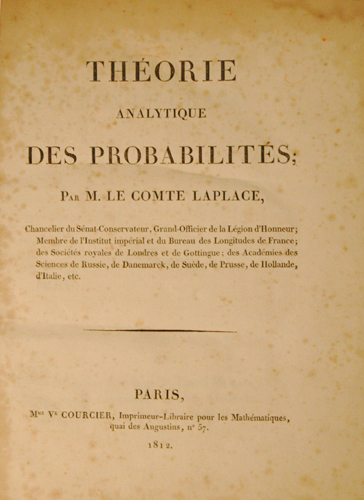

 As soon as Laplace moved to Paris to the Ecole Militaire, He began producing remarkable mathematical papers. His first paper was on maxima and minima of curves where he improved on methods given by Lagrange. His next paper concerned differential equations.
In 1785, Laplace took the key forward step in using integrals in order to transform a whole difference equation, rather than simply as a form for the solution, and found that the transformed equation was easier to solve than the original.
Laplace was a member of the committee of the Académie des Sciences to standardise weights and measures in May 1790. This committee worked on the metric system and advocated a decimal base.
On of the most remarkable papers published by Laplace was the first edition of "Laplace's Théorie Analytique des Probabilités" in 1812. It covered the generation of functions, approximations to various expressions occurring in probability theory, Laplace's definition of probability, Bayes's rule, least squares, Buffon's needle problem, inverse probability, and applications to mortality, life expectancy, the length of marriages, and legal matters.
Amongst the other discoveries of Laplace in pure and applied mathematics are:
- Discussion of the general theory of determinants.
- Proof that every equation of an even degree must have at least one real quadratic factor.
- Laplace's method for approximating integrals.
- Solution of the linear partial differential equation of the second order.
-
Probability:
- De Moivre–Laplace theorem that approximates binomial distribution with a normal distribution.
- Evaluation of several common definite integrals.
- General proof of the Lagrange reversion theorem.
- Inductive Probability.
- Least Squares and Central Limit Theorem.